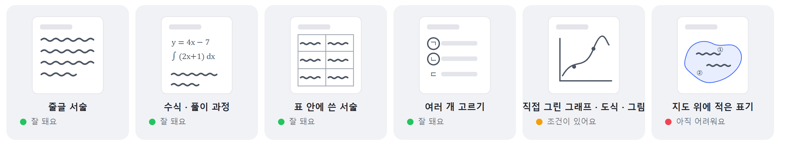

이런 답안은 어때요?
답안 형태별로 잘 되는 것, 조건이 있는 것, 아직 어려운 것.
실제 채점 검수에서 확인한 결과예요. 과목보다 답안의 형태가 결과를 가르기 때문에 형태 기준으로 정리했어요.
형태별로 한눈에

잘 돼요 · 조건이 있어요 · 아직 어려워요
조건이 있어요는 "안 된다"가 아니라 준비를 갖추면 된다는 뜻이에요. 무엇을 갖추면 되는지 함께 적었어요.
| ✅ 잘 돼요 | ⚠️ 조건이 있어요 | ⛔ 아직 어려워요 |
|---|---|---|
| 줄글 서술 (또박또박 쓴 손글씨 포함) | 직접 그린 그래프·도식·그림(회로도·세포 등) — 읽긴 하지만, 없는 표기를 있다고 볼 때가 있어요. 표기 개수를 세는 채점 요소와 만나면 인식 결과를 확인해 주세요. | 지도 위에 적은 국가명·기호·순위 |
| 바로 세워 스캔한 원고지 | 단어 수·문장 수 세기 — 칸 안에 한 단어씩 쓰는 활동지에서는 정확했어요. 확실히 하려면 학생이 직접 개수를 적게 하세요. | 수업 태도·참여도 |
| 수식과 풀이 과정 (고등 확률·통계, 미적분까지) | 부분 점수 — 경계 배점을 채점기준에 적어야 해요. | 스스로 썼는지 여부 |
| 표 안에 쓴 서술 | 화학식·반응식 — 대체로 읽지만, 빈칸을 채운 것으로 볼 때가 있어요. | |
| 여러 개를 고르는 문항에서 고른 개수 세기 | 외국어 철자 오류 판정 — 탁점처럼 작은 표기 오류는 놓칠 수 있어요. | |
| 영어·중국어·일본어 등 외국어 답안 읽기 | 백지·빈칸 — 백지는 처리되지만, 빈칸에 답이 있다고 볼 때가 있어요. | |
| 정답 요소·키워드가 있는지 판정, "몇 개 제시했는가" 세기 |
🗺️
아직 어려운 것은 채점 요소에서 빼 주세요. 지도 위 표기, 수업 태도·참여도, 학생이 스스로 썼는지는 AI가 판단할 수 없어요. 그 요소만 선생님이 직접 점수를 입력하면 나머지는 그대로 AI 채점을 쓸 수 있어요.